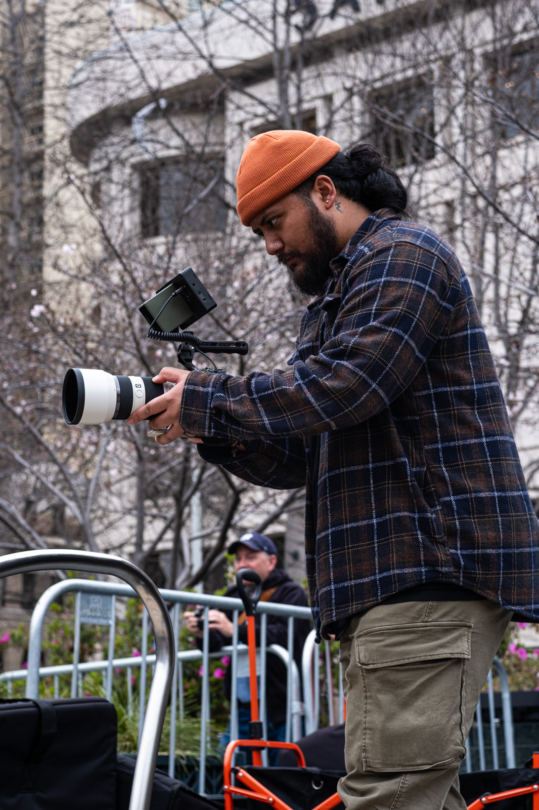

About Me

Welcome to Key Photos. My name is Keanu Tafeamalii and I'm a photographer who continues to grow through creativity, experimentation, and experience. What started as an interest in capturing moments has developed into a deeper appreciation for the art of photography. Over time, I've explored different styles and techniques, each helping me discover new ways to express my perspective.
My Photography
My photography explores a variety of subjects, from studio portraits and automotive photography to landscapes and everyday moments. I enjoy experimenting with different styles, lighting, and compositions, allowing each experience to shape my creative perspective.
My Approach
I believe photography is more than simply capturing images that preserve memories. It's about the experiences we share and the connections we make while creating those memories. While photographs allow us to revisit moments in time, I believe the experience of being present and sharing those moments with others is far more meaningful.
Photography is the incentive, but the connections are the goal.